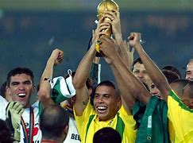

Principais Momentos

Cinco Copas do Mundo: Um Recorde Histórico
O Brasil é um país apaixonado pelo futebol e tem uma rica história de conquistas esportivas.
Neymar e a Medalha de Ouro Olímpica
A conquista da medalha de ouro olímpica em 2016 foi um momento histórico para o país, marcando a primeira medalha de ouro olímpica no futebol para o Brasil.
Os Grandes Jogadores do Brasil
O Brasil é lar de alguns dos maiores jogadores de futebol de todos os tempos, como Pelé, considerado por muitos o melhor jogador de todos os tempos, e um ícone do futebol brasileiro.